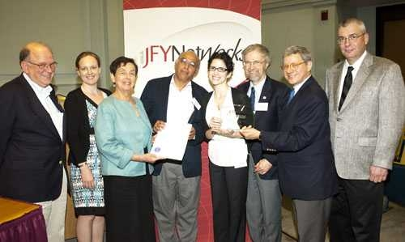

In memoriam
Charles “Chuck” Shubert was a founder of MIT’s Software Tools for Academics and Researchers (STAR) program, which brought research tools into classrooms. He worked as a software developer in MIT’s Academic Computing group and later served as a senior programmer analyst and STAR program leader in the Office of Educational Innovation and Technology.
In 2004, Shubert began working with biology professor Graham Walker on a way for students to explore protein structures in three dimensions. He joined forces with developer Ivica Ceraj in 2005. Their work became StarBiochem, the first tool in the STAR series. Shubert and Ceraj moved to the newly created Office of Educational Innovation and Technology in 2007, where the STAR team continued to build tools for teaching science.
A 2006 MIT News report on the earlier PDBViewer project quoted Shubert on the collaboration among MIT’s biology, physics, and computing groups.
